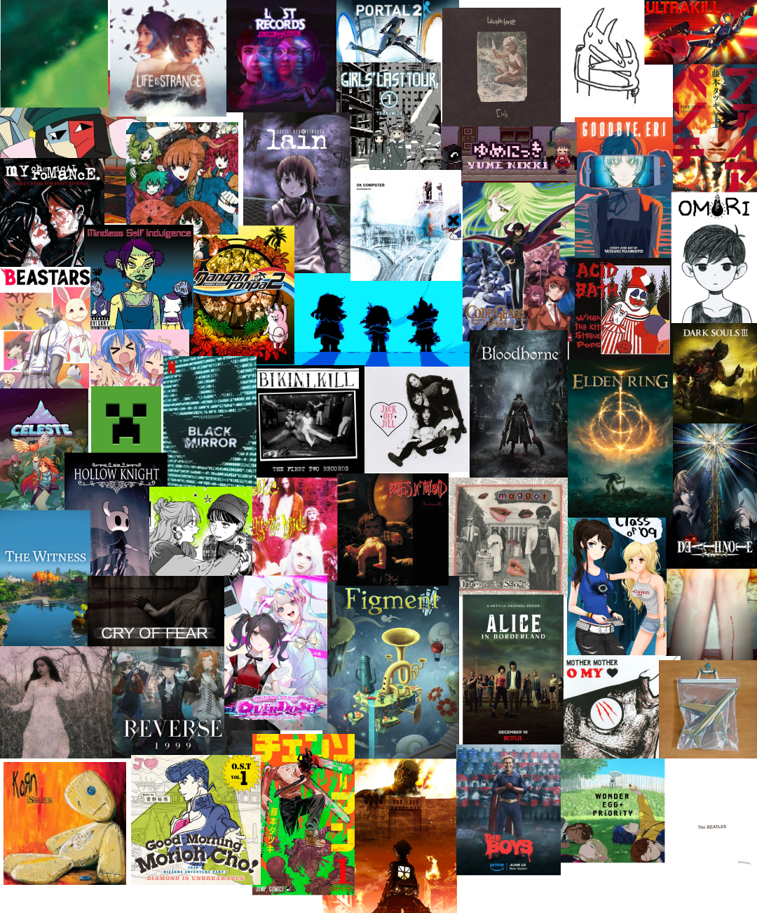

hai!!!
My name is Bea, I am 16, and I live in Hungary.
My interest include: math, videogames, animanga, fanfiction( and other literature), programming, art, music, politcal philosophy and women. I long to create, I believe effort and dedication is the most valuable thing of all. Even if somebody else can paint prettier pictures, yours doesn't become worthless, because it's the product of your hard work. If you can't tell already I'm a hardcore gen AI hater.
I got into web development after my computer science class in school disappointed me. We progressed too slow and by the end of the year, there was no time left for HTML, so it was just skipped. It wasn't the first time I was forced to self-teach(math).
I share the neocities sentiment of making the internet beautiful again. I made this webiste exactly for that reason. I wanted to have my own corner of the internet that is truly mine. One that is so much more than a black box of pfp username and bio.
I hope one day my works become impressive enough to inspire people to also create, the same way I was.

IMPORTANT q&a
-
favorite dinosaur?
triceratops -
which planet would you eat if they were bite-sized?
jupiter -
how do you pronounce gif?
gif -
favorite lego ninjago character?
zane